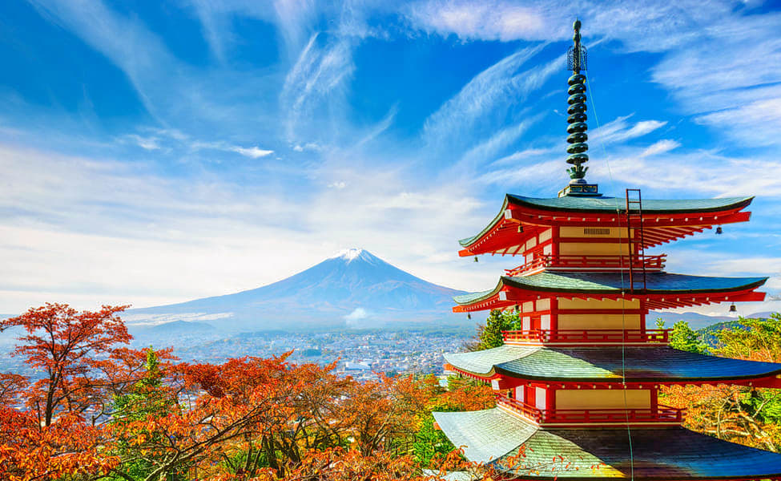

ENCHANTING JAPAN
Duration - 6D/5N
|  |
Japan is an archipelago, or string of islands, on the eastern edge of Asia. There are four main islands: Hokkaido, Honshu, Shikoku, and Kyushu. There are also nearly 4,000 smaller islands! Japan's nearest mainland neighbors are the Siberian region of Russia in the north and Korea and China farther south. Almost four-fifths of Japan is covered with mountains. The Japanese Alps run down the center of the largest island, Honshu. The highest peak is Mount Fuji, a cone-shaped volcano considered sacred by many Japanese. |
||||||||
| The Japanese are famous for their willingness to work very hard. Children are taught to show respect for others, especially parents and bosses. They learn to do what's best for their family or company and worry less about their own needs. Japanese food is very different from food in Western countries. There is lots of rice, fish, and vegetables, but little meat. With little fat or dairy, this diet is very healthy, which helps Japanese people live, on average, longer than any other people in the world. |
Highlights -
-
- Embrace the picturesque beauty of Mount Fuji, a UNESCO World Heritage Site.
- Channel your inner shopaholic at Nakamise Shopping Street.
- Visit the Odaiba Seaside Park, on the banks of Tokyo Bay and catch an unparalleled view of the city skyline.
Itinerary -
-
Day 1 - Arrival at Tokyo
Arrive in Tokyo and get dropped by our representative at the pre-booked hotel. Today marks the 1st day of your 6 Days Japan Tour Package.
Spend the 1st half of the day at leisure.
In the evening, visit the Tokyo Tower and marvel at its elevation. Later, hit clubs or bars to enjoy the peppy nightlife of Japan.
Overnight stay at a hotel.
Day 2 - Tokyo : Local Sightseeing
After having a sumptuous breakfast, step out of the hotel to explore Tokyo. Take a casual stroll and inhale fresh air at the East Gardens of the Imperial Palace. Channel your inner shopaholic at Nakamise Shopping Street which is the oldest shopping promenade in Tokyo and is lined with small kiosks. Visit Sensō-Ji, one of the popular spiritual sites in the world and the oldest temple in Tokyo.
In the afternoon, gorge on a delicious lunch at one of the Japanese Restaurants. Spend a relaxing time at Odaiba Seaside Park, on the banks of Tokyo Bay and catch an unparalleled view of the city skyline.
Overnight stay at the hotel.
Day 3 - Trip to Mt. Fuji
After completing your breakfast, head towards the pickup point to board a bus for an excursion to Mt. Fuji. Advance towards Lake Ashi which was formed 3000 years ago and is known for its spellbinding beauty.
Enjoy a cable car ride at Mt. Komagatake, away from the urban chaos of Tokyo. Travel back to Tokyo via a bus.
Overnight stay at the hotel.
Day 4 - Tokyo to Osaka
Wake up in the morning and finish off your breakfast. Check-out from the hotel and head towards the Tokyo Train Station. Board a Shinkansen Bullet Train to reach Osaka bypassing a scenic route. Arrival in Osaka.
Meet and greet with our representative who will escort you to your pre-booked hotel. In the evening, explore Osaka’s popular marketplaces and entertainment zones. Overnight stay at the hotel.
Day 5 - Osaka: Local Sightseeing
After completing your breakfast, you will start exploring the major highlights of Osaka. Visit the Osaka Castle which is one of the iconic landmarks in Japan. Next, head to Shitennō-Ji Temple, Japan's 1st Buddhist Temple belonging to AD 59.
Spend 2-3 hours at the National Museum of Art which has a large collection of Japanese art.
Indulge in thrilling rides at Universal Studio and have a good time. Get dropped off at Osaka Station. Overnight stay at the hotel.
Day 6 - Departure
Post breakfast, check-out from the hotel. Get transferred to the airport.
End your 6 Days Japan Tour Package with a bag full of memories. Inclusion -
Exclusion -
-
Meals which don't find their mention in the package are not included in the package.
Other personal expenses, entrance tickets, and hotel taxes (if any) will have to be borne by the travellers.